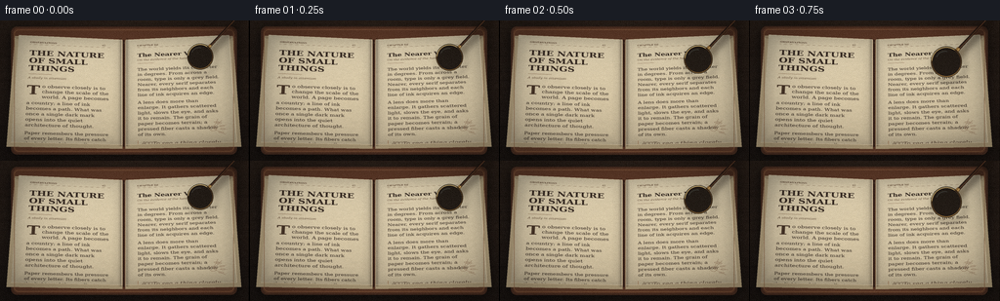
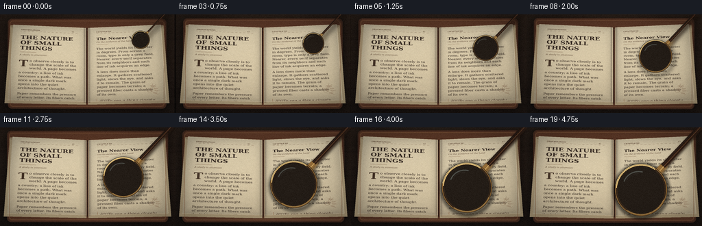
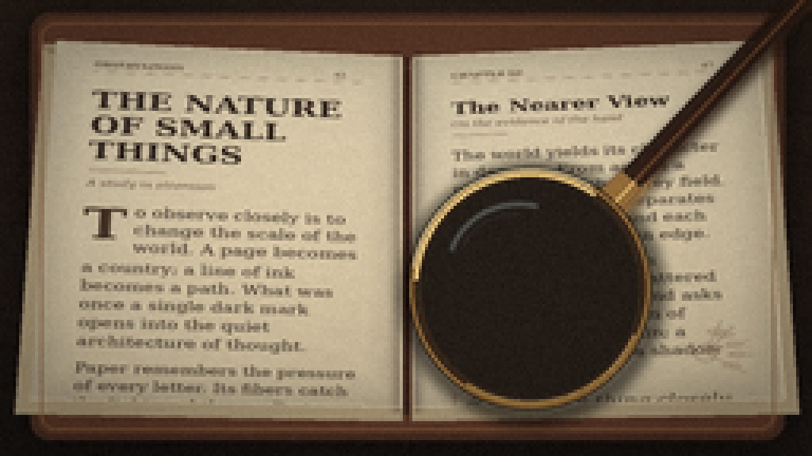
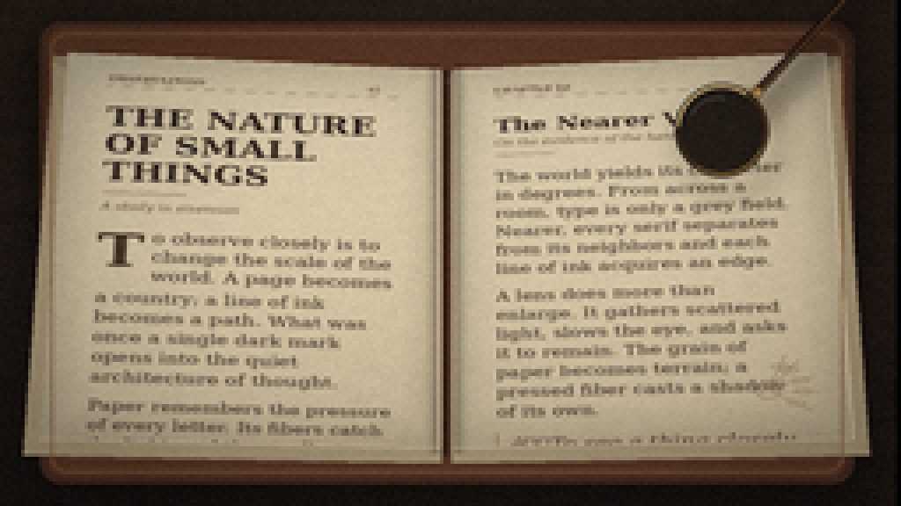
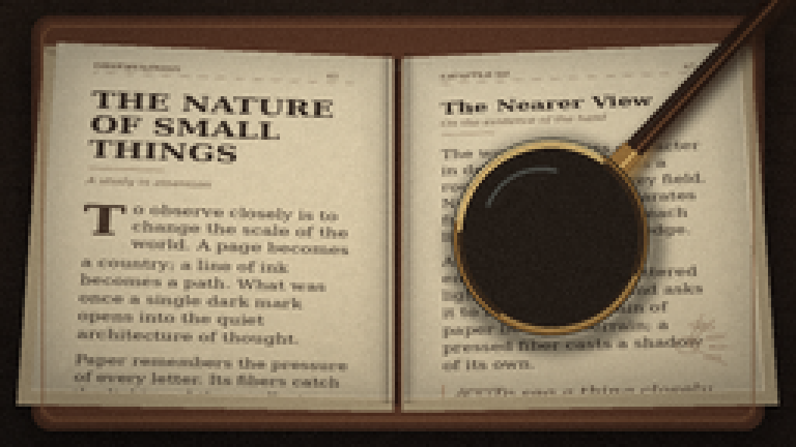

CODING AGENTS AS PIXEL WORLD MODELS
traex/DeepSeek-V4.1-Flash · phygen_066
点击播放 · 原生 RGB 像素
逐轮保存的候选
回放视频、检查图与代码变化。
每份候选均可单独播放。实际图片检查记录在下方工具轨迹中。
候选 01播放与检查图
点击播放 · 原生 RGB 像素


展开代码变化
--- 上一保存版本
+++ 本次保存版本
@@ -0,0 +1,579 @@
+from __future__ import annotations
+
+import math
+import textwrap
+from pathlib import Path
+
+import numpy as np
+from PIL import Image, ImageDraw, ImageFilter, ImageFont
+
+import artifact_io
+
+
+WIDTH = 256
+HEIGHT = 144
+FRAMES = 20
+FPS = 4.0
+SS = 4 # Render at four times the output resolution before downsampling.
+RW, RH = WIDTH * SS, HEIGHT * SS
+ROOT = Path(__file__).resolve().parent
+RNG = np.random.default_rng(4661)
+
+SERIF = "/usr/share/fonts/truetype/dejavu/DejaVuSerif.ttf"
+SERIF_BOLD = "/usr/share/fonts/truetype/dejavu/DejaVuSerif-Bold.ttf"
+SERIF_ITALIC = "/usr/share/fonts/truetype/dejavu/DejaVuSerif-Italic.ttf"
+
+
+def font(path: str, size: int) -> ImageFont.FreeTypeFont:
+ return ImageFont.truetype(path, size)
+
+
+def smoothstep(x: float) -> float:
+ x = min(1.0, max(0.0, x))
+ return x * x * (3.0 - 2.0 * x)
+
+
+def box_blur(array: np.ndarray, radius: int) -> np.ndarray:
+ """Separable box blur for floating-point arrays."""
+ if radius <= 0:
+ return array
+ out = np.asarray(array, dtype=np.float32)
+ for axis in (0, 1):
+ pad = [(0, 0)] * out.ndim
+ pad[axis] = (radius + 1, radius)
+ padded = np.pad(out, pad, mode="reflect")
+ cumulative = np.cumsum(padded, axis=axis, dtype=np.float32)
+ before = np.take(cumulative, np.arange(0, cumulative.shape[axis] - 2 * radius - 1), axis=axis)
+ after = np.take(cumulative, np.arange(2 * radius + 1, cumulative.shape[axis]), axis=axis)
+ out = (after - before) / float(2 * radius + 1)
+ return out
+
+
+def soft_blur(array: np.ndarray, radius: int) -> np.ndarray:
+ for _ in range(3):
+ array = box_blur(array, radius)
+ return array
+
+
+def add_texture(image: Image.Image, amount: float = 5.0, seed: int = 0) -> Image.Image:
+ arr = np.asarray(image, dtype=np.float32)
+ rng = np.random.default_rng(seed)
+ fine = rng.normal(0.0, amount, arr.shape[:2])
+ fine = soft_blur(fine, 1)
+ broad = rng.normal(0.0, 1.0, (arr.shape[0] // 8 + 1, arr.shape[1] // 8 + 1))
+ broad = np.asarray(Image.fromarray(broad.astype(np.float32)).resize(
+ (arr.shape[1], arr.shape[0]), Image.Resampling.BICUBIC
+ ))
+ broad = soft_blur(broad, 2)
+ arr += fine[..., None] + broad[..., None] * amount * 0.55
+ return Image.fromarray(np.clip(arr, 0, 255).astype(np.uint8), "RGB")
+
+
+def page_base(width: int, height: int, seed: int) -> Image.Image:
+ yy, xx = np.mgrid[0:height, 0:width].astype(np.float32)
+ x = xx / (width - 1)
+ y = yy / (height - 1)
+ paper = np.empty((height, width, 3), dtype=np.float32)
+ paper[..., 0] = 222 - 13 * y + 4 * x
+ paper[..., 1] = 208 - 15 * y + 3 * x
+ paper[..., 2] = 177 - 16 * y + 1 * x
+
+ # Uneven pulp mottling and a faint warm-to-cool cast across the sheet.
+ rng = np.random.default_rng(seed)
+ mott = rng.normal(0, 1, (height // 9 + 2, width // 9 + 2))
+ mott = np.asarray(Image.fromarray(mott.astype(np.float32)).resize(
+ (width, height), Image.Resampling.BICUBIC
+ ))
+ mott = soft_blur(mott, 6)
+ paper += mott[..., None] * np.array([2.7, 2.2, 1.6], dtype=np.float32)
+ paper += (rng.random((height, width, 1)) - 0.5) * 7.0
+
+ # Slight page crown: brighter near the reader and gently shaded at edges.
+ crown = 1.0 - 0.13 * ((x - 0.48) ** 2 + (y - 0.40) ** 2)
+ paper *= crown[..., None]
+ edge = np.minimum.reduce([x, 1 - x, y, 1 - y])
+ paper *= (0.91 + 0.09 * np.clip(edge * 10, 0, 1))[..., None]
+ return Image.fromarray(np.clip(paper, 0, 255).astype(np.uint8), "RGB")
+
+
+def wrap_lines(text: str, fnt: ImageFont.FreeTypeFont, max_width: int) -> list[str]:
+ words = text.split()
+ lines: list[str] = []
+ current = ""
+ probe = ImageDraw.Draw(Image.new("L", (8, 8)))
+ for word in words:
+ candidate = word if not current else current + " " + word
+ if probe.textlength(candidate, font=fnt) <= max_width:
+ current = candidate
+ else:
+ if current:
+ lines.append(current)
+ current = word
+ if current:
+ lines.append(current)
+ return lines
+
+
+def draw_body(
+ draw: ImageDraw.ImageDraw,
+ text: str,
+ x: int,
+ y: int,
+ max_width: int,
+ size: int = 34,
+ leading: int = 47,
+ color: tuple[int, int, int] = (53, 42, 34),
+) -> int:
+ body_font = font(SERIF, size)
+ for line in wrap_lines(text, body_font, max_width):
+ draw.text((x, y), line, font=body_font, fill=color)
+ y += leading
+ return y
+
+
+def make_left_page() -> Image.Image:
+ width, height = 640, 900
+ page = page_base(width, height, 17)
+ draw = ImageDraw.Draw(page)
+ ink = (55, 43, 35)
+ muted = (100, 78, 59)
+
+ draw.text((72, 48), "OBSERVATIONS", font=font(SERIF_BOLD, 18), fill=muted)
+ draw.text((515, 48), "42", font=font(SERIF, 18), fill=muted)
+ draw.line((72, 77, 568, 77), fill=(129, 102, 78), width=1)
+
+ title_font = font(SERIF_BOLD, 60)
+ draw.text((72, 117), "THE NATURE", font=title_font, fill=ink)
+ draw.text((72, 183), "OF SMALL", font=title_font, fill=ink)
+ draw.text((72, 249), "THINGS", font=title_font, fill=ink)
+
+ draw.line((74, 335, 212, 335), fill=(121, 88, 61), width=2)
+ draw.text((72, 354), "A study in attention", font=font(SERIF_ITALIC, 23), fill=muted)
+
+ # Oversized initial and an indented opening paragraph.
+ draw.text((70, 410), "T", font=font(SERIF_BOLD, 104), fill=(71, 53, 40))
+ draw.text((160, 420), "o observe closely is to", font=font(SERIF, 34), fill=ink)
+ draw.text((160, 464), "change the scale of the", font=font(SERIF, 34), fill=ink)
+ draw.text((160, 508), "world. A page becomes", font=font(SERIF, 34), fill=ink)
+
+ y = 560
+ y = draw_body(
+ draw,
+ "a country; a line of ink becomes a path. What was once a single dark mark "
+ "opens into the quiet architecture of thought.",
+ 72, y, 496, size=33, leading=45,
+ )
+ y += 20
+ draw_body(
+ draw,
+ "Paper remembers the pressure of every letter. Its fibers catch the light, "
+ "and the smallest abrasion becomes a landmark.",
+ 72, y, 496, size=31, leading=42,
+ )
+
+ # Soft gutter shadow, visible at the inner edge after perspective mapping.
+ shade = Image.new("L", (width, height), 0)
+ sd = ImageDraw.Draw(shade)
+ for i in range(52):
+ alpha = int(115 * ((52 - i) / 52) ** 1.8)
+ sd.rectangle((width - 1 - i, 0, width - 1, height), fill=alpha)
+ shade = shade.filter(ImageFilter.GaussianBlur(5))
+ shadow = Image.new("RGB", (width, height), (57, 40, 29))
+ page = Image.composite(shadow, page, shade)
+ return add_texture(page, 2.0, 29)
+
+
+def make_right_page() -> Image.Image:
+ width, height = 640, 900
+ page = page_base(width, height, 31)
+ draw = ImageDraw.Draw(page)
+ ink = (54, 43, 35)
+ muted = (100, 77, 58)
+
+ draw.text((72, 48), "CHAPTER III", font=font(SERIF_BOLD, 18), fill=muted)
+ draw.text((535, 48), "43", font=font(SERIF, 18), fill=muted)
+ draw.line((72, 77, 568, 77), fill=(129, 102, 78), width=1)
+
+ draw.text((72, 121), "The Nearer View", font=font(SERIF_BOLD, 43), fill=ink)
+ draw.text((72, 176), "On the evidence of the hand", font=font(SERIF_ITALIC, 22), fill=muted)
+ draw.line((72, 219, 174, 219), fill=(133, 103, 77), width=2)
+
+ y = draw_body(
+ draw,
+ "The world yields its character in degrees. From across a room, type is only "
+ "a grey field. Nearer, every serif separates from its neighbors and each line "
+ "of ink acquires an edge.",
+ 72, 255, 496, size=32, leading=44,
+ )
+ y += 20
+ y = draw_body(
+ draw,
+ "A lens does more than enlarge. It gathers scattered light, slows the eye, "
+ "and asks it to remain. The grain of paper becomes terrain; a pressed fiber "
+ "casts a shadow of its own.",
+ 72, y, 496, size=32, leading=44,
+ )
+ y += 27
+
+ quote_font = font(SERIF_ITALIC, 36)
+ draw.text((94, y), "âTo see a thing closely", font=quote_font, fill=(78, 57, 42))
+ draw.text((94, y + 46), "is to grant it time.â", font=quote_font, fill=(78, 57, 42))
+ draw.line((72, y - 4, 72, y + 77), fill=(145, 106, 75), width=3)
+ y += 118
+ draw_body(
+ draw,
+ "The smallest detail is rarely incidental. It is the place where matter and "
+ "attention meet.",
+ 72, y, 496, size=30, leading=41,
+ )
+
+ # Faint botanical plate at the foot of the page.
+ center = (512, 787)
+ for angle in (-1.18, -0.88, -0.35, 0.10, 0.62):
+ dx, dy = math.cos(angle), math.sin(angle)
+ x0, y0 = center[0], center[1]
+ x1, y1 = x0 + 83 * dx, y0 + 83 * dy
+ draw.line((x0, y0, x1, y1), fill=(150, 121, 94), width=2)
+ px, py = x0 + 55 * dx, y0 + 55 * dy
+ draw.ellipse((px - 15, py - 6, px + 15, py + 6), outline=(150, 121, 94), width=2)
+ draw.ellipse((492, 767, 532, 807), outline=(140, 111, 85), width=2)
+
+ shade = Image.new("L", (width, height), 0)
+ sd = ImageDraw.Draw(shade)
+ for i in range(52):
+ alpha = int(120 * ((52 - i) / 52) ** 1.8)
+ sd.rectangle((0, 0, i, height), fill=alpha)
+ shade = shade.filter(ImageFilter.GaussianBlur(5))
+ shadow = Image.new("RGB", (width, height), (58, 40, 29))
+ page = Image.composite(shadow, page, shade)
+ return add_texture(page, 2.0, 43)
+
+
+def homography(src_quad: np.ndarray, dst_quad: np.ndarray) -> np.ndarray:
+ matrix = []
+ rhs = []
+ for (x, y), (u, v) in zip(src_quad, dst_quad):
+ matrix.append([x, y, 1, 0, 0, 0, -u * x, -u * y])
+ rhs.append(u)
+ matrix.append([0, 0, 0, x, y, 1, -v * x, -v * y])
+ rhs.append(v)
+ coeff = np.linalg.solve(np.asarray(matrix, dtype=np.float64), np.asarray(rhs, dtype=np.float64))
+ return np.array([[coeff[0], coeff[1], coeff[2]],
+ [coeff[3], coeff[4], coeff[5]],
+ [coeff[6], coeff[7], 1.0]])
+
+
+def map_to_quad(src: Image.Image, dst_quad: list[tuple[float, float]]) -> Image.Image:
+ w, h = src.size
+ src_corners = np.array([(0, 0), (w, 0), (w, h), (0, h)], dtype=np.float64)
+ dst_corners = np.asarray(dst_quad, dtype=np.float64)
+ forward = homography(src_corners, dst_corners)
+ inverse = np.linalg.inv(forward)
+ coeffs = (inverse / inverse[2, 2]).reshape(-1)[:8]
+ return src.convert("RGBA").transform(
+ (RW, RH), Image.Transform.PERSPECTIVE, tuple(coeffs),
+ resample=Image.Resampling.BICUBIC, fillcolor=(0, 0, 0, 0),
+ )
+
+
+def make_desk() -> Image.Image:
+ yy, xx = np.mgrid[0:RH, 0:RW].astype(np.float32)
+ x = xx / (RW - 1)
+ y = yy / (RH - 1)
+ arr = np.empty((RH, RW, 3), dtype=np.float32)
+ arr[..., 0] = 34 + 16 * (1 - y) + 5 * x
+ arr[..., 1] = 27 + 11 * (1 - y) + 3 * x
+ arr[..., 2] = 23 + 7 * (1 - y) + 2 * x
+
+ rng = np.random.default_rng(8)
+ grain = rng.normal(0, 1, (RH // 3, RW // 3))
+ grain = np.asarray(Image.fromarray(grain.astype(np.float32)).resize(
+ (RW, RH), Image.Resampling.BICUBIC
+ ))
+ grain = soft_blur(grain, 5)
+ arr += grain[..., None] * np.array([5.0, 4.0, 3.0])
+
+ # Long, low-contrast wood grain.
+ for _ in range(28):
+ y0 = float(rng.uniform(0, RH))
+ amp = float(rng.uniform(1.5, 5.0))
+ freq = float(rng.uniform(0.008, 0.022))
+ phase = float(rng.uniform(0, math.tau))
+ line_y = y0 + amp * np.sin(xx[0] * freq + phase)
+ dist = np.abs(yy - line_y[None, :])
+ arr -= np.exp(-(dist / 1.6) ** 2)[..., None] * np.array([5.0, 4.0, 3.0])
+
+ light = np.exp(-(((x - 0.49) / 0.53) ** 2 + ((y - 0.43) / 0.62) ** 2) * 1.7)
+ arr *= (0.73 + 0.38 * light)[..., None]
+ return Image.fromarray(np.clip(arr, 0, 255).astype(np.uint8), "RGB").filter(
+ ImageFilter.GaussianBlur(2.0)
+ )
+
+
+def build_book() -> Image.Image:
+ base = make_desk()
+ shadow = Image.new("RGBA", (RW, RH), (0, 0, 0, 0))
+ sd = ImageDraw.Draw(shadow)
+ sd.rounded_rectangle((45, 34, 983, 554), radius=28, fill=(0, 0, 0, 150))
+ shadow = shadow.filter(ImageFilter.GaussianBlur(22))
+ base = Image.alpha_composite(base.convert("RGBA"), shadow)
+
+ draw = ImageDraw.Draw(base)
+ # Leather binding and the layered page block.
+ draw.rounded_rectangle((50, 25, 975, 550), radius=24, fill=(70, 44, 32, 255))
+ draw.rounded_rectangle((59, 31, 966, 542), radius=19, fill=(91, 56, 39, 255))
+ draw.polygon([(66, 63), (506, 82), (506, 527), (31, 518)], fill=(171, 153, 120, 255))
+ draw.polygon([(518, 82), (958, 63), (993, 518), (518, 527)], fill=(171, 153, 120, 255))
+ for i in range(5):
+ off = i * 2
+ draw.line((64 + off, 67 + off, 505 + off, 86 + off), fill=(130, 111, 86, 255), width=1)
+ draw.line((519 - off, 86 + off, 956 - off, 67 + off), fill=(130, 111, 86, 255), width=1)
+
+ left_quad = [(82, 60), (504, 79), (504, 510), (50, 500)]
+ right_quad = [(520, 79), (942, 60), (974, 500), (520, 510)]
+ left = map_to_quad(make_left_page(), left_quad)
+ right = map_to_quad(make_right_page(), right_quad)
+ base = Image.alpha_composite(base, left)
+ base = Image.alpha_composite(base, right)
+
+ # Gutter depth and page-edge highlights.
+ overlay = Image.new("RGBA", (RW, RH), (0, 0, 0, 0))
+ od = ImageDraw.Draw(overlay)
+ for i in range(18):
+ alpha = int(88 * (1 - i / 18) ** 1.8)
+ od.line((502 - i, 72, 502 - i, 516), fill=(34, 23, 18, alpha), width=1)
+ od.line((522 + i, 72, 522 + i, 516), fill=(34, 23, 18, alpha), width=1)
+ od.line((511, 80, 511, 518), fill=(28, 20, 17, 155), width=7)
+ base = Image.alpha_composite(base, overlay)
+
+ draw = ImageDraw.Draw(base)
+ draw.line([(82, 60), (504, 79), (504, 510), (50, 500)], fill=(235, 216, 181, 105), width=2)
+ draw.line([(520, 79), (942, 60), (974, 500), (520, 510)], fill=(235, 216, 181, 105), width=2)
+
+ # A restrained embossed border on the leather.
+ draw.rounded_rectangle((63, 38, 962, 537), radius=18, outline=(135, 93, 62, 100), width=2)
+ return base.convert("RGB").filter(ImageFilter.GaussianBlur(0.55))
+
+
+def camera_crop(base: Image.Image, amount: float) -> Image.Image:
+ zoom = 1.0 + 0.028 * amount
+ cw, ch = RW / zoom, RH / zoom
+ cx = RW * (0.505 - 0.006 * amount)
+ cy = RH * (0.500 + 0.004 * amount)
+ left = int(round(cx - cw / 2))
+ top = int(round(cy - ch / 2))
+ return base.crop((left, top, left + int(round(cw)), top + int(round(ch)))).resize(
+ (RW, RH), Image.Resampling.LANCZOS
+ )
+
+
+def bilinear(image: np.ndarray, xs: np.ndarray, ys: np.ndarray) -> np.ndarray:
+ h, w = image.shape[:2]
+ xs = np.clip(xs, 0, w - 1.001)
+ ys = np.clip(ys, 0, h - 1.001)
+ x0 = np.floor(xs).astype(np.int32)
+ y0 = np.floor(ys).astype(np.int32)
+ x1 = np.minimum(x0 + 1, w - 1)
+ y1 = np.minimum(y0 + 1, h - 1)
+ fx = xs - x0
+ fy = ys - y0
+ out = (
+ image[y0, x0] * ((1 - fx) * (1 - fy))[..., None]
+ + image[y0, x1] * (fx * (1 - fy))[..., None]
+ + image[y1, x0] * ((1 - fx) * fy)[..., None]
+ + image[y1, x1] * (fx * fy)[..., None]
+ )
+ return out
+
+
+def lens_content(base: np.ndarray, cx: float, cy: float, radius: float, mag: float) -> tuple[np.ndarray, np.ndarray]:
+ r = int(math.ceil(radius)) + 2
+ x0, x1 = int(cx) - r, int(cx) + r + 1
+ y0, y1 = int(cy) - r, int(cy) + r + 1
+ yy, xx = np.mgrid[y0:y1, x0:x1].astype(np.float32)
+ dx = (xx - cx) / radius
+ dy = (yy - cy) / radius
+ rr = np.sqrt(dx * dx + dy * dy)
+ disk = rr <= 1.0
+
+ # Gentle barrel distortion, plus a subpixel chromatic separation at the rim.
+ bend = 1.0 + 0.030 * rr * rr + 0.012 * rr**4
+ sample_r = radius / mag
+ sx = cx + dx * bend * sample_r
+ sy = cy + dy * bend * sample_r
+ sx_r = cx + dx * (bend + 0.0018) * sample_r
+ sy_r = cy + dy * (bend + 0.0018) * sample_r
+ sx_b = cx + dx * (bend - 0.0018) * sample_r
+ sy_b = cy + dy * (bend - 0.0018) * sample_r
+
+ center = bilinear(base, sx, sy)
+ red = bilinear(base, sx_r, sy_r)
+ blue = bilinear(base, sx_b, sy_b)
+ content = center.copy()
+ content[..., 0] = red[..., 0]
+ content[..., 2] = blue[..., 2]
+
+ # Optical tint and radial falloff.
+ content *= np.array([0.965, 1.012, 1.018], dtype=np.float32)
+ content += np.array([2.0, 4.0, 5.0], dtype=np.float32)
+ content *= (1.035 - 0.11 * rr**2)[..., None]
+ return np.clip(content, 0, 255), disk
+
+
+def draw_handle(draw: ImageDraw.ImageDraw, cx: float, cy: float, radius: float, t: float) -> None:
+ angle = math.radians(-47.0)
+ ux, uy = math.cos(angle), math.sin(angle)
+ px, py = -uy, ux
+ start = (cx + ux * radius * 0.76, cy + uy * radius * 0.76)
+ length = radius * 3.55 + 18
+ width = max(8.0, radius * 0.205)
+ end = (start[0] + ux * length, start[1] + uy * length)
+
+ # Dark wooden handle with a narrow highlight down its upper face.
+ poly = [
+ (start[0] + px * width * 0.50, start[1] + py * width * 0.50),
+ (end[0] + px * width * 0.34, end[1] + py * width * 0.34),
+ (end[0] - px * width * 0.34, end[1] - py * width * 0.34),
+ (start[0] - px * width * 0.50, start[1] - py * width * 0.50),
+ ]
+ draw.polygon(poly, fill=(49, 31, 22, 255), outline=(21, 15, 12, 255))
+ draw.line(
+ (start[0] + px * width * 0.16, start[1] + py * width * 0.16,
+ end[0] + px * width * 0.10, end[1] + py * width * 0.10),
+ fill=(112, 72, 45, 225), width=max(2, int(width * 0.14)),
+ )
+ draw.line(
+ (start[0] - px * width * 0.27, start[1] - py * width * 0.27,
+ end[0] - px * width * 0.18, end[1] - py * width * 0.18),
+ fill=(30, 20, 16, 210), width=max(2, int(width * 0.15)),
+ )
+
+ # Brass collar where the handle enters the rim.
+ collar_end = (start[0] + ux * radius * 0.48, start[1] + uy * radius * 0.48)
+ collar_width = width * 1.13
+ cpoly = [
+ (start[0] + px * collar_width * 0.55, start[1] + py * collar_width * 0.55),
+ (collar_end[0] + px * collar_width * 0.50, collar_end[1] + py * collar_width * 0.50),
+ (collar_end[0] - px * collar_width * 0.50, collar_end[1] - py * collar_width * 0.50),
+ (start[0] - px * collar_width * 0.55, start[1] - py * collar_width * 0.55),
+ ]
+ draw.polygon(cpoly, fill=(151, 111, 59, 255), outline=(58, 40, 24, 255))
+ draw.line(
+ (start[0] + px * width * 0.16, start[1] + py * width * 0.16,
+ collar_end[0] + px * width * 0.16, collar_end[1] + py * width * 0.16),
+ fill=(234, 194, 119, 230), width=max(2, int(width * 0.12)),
+ )
+
+
+def composite_lens(frame: Image.Image, t: float) -> Image.Image:
+ # Smooth descent with a slow start, then a steady approach.
+ s = smoothstep(t)
+ s = 0.18 * s + 0.82 * (s ** 0.82)
+ cx = (205.0 - 38.0 * s) * SS
+ cy = (37.0 + 54.0 * s) * SS
+ radius = (13.0 + 25.0 * s) * SS
+ mag = 1.45 + 2.15 * s
+
+ # Distance-dependent ring shadow: broad and faint when high, tight and dark when close.
+ shadow_layer = Image.new("RGBA", (RW, RH), (0, 0, 0, 0))
+ sh = ImageDraw.Draw(shadow_layer)
+ blur = 14.0 - 7.0 * s
+ shadow_radius = radius * (1.10 + 0.04 * (1 - s))
+ offset = (4.0 + 7.0 * (1 - s), 7.0 + 11.0 * (1 - s))
+ scx, scy = cx + offset[0], cy + offset[1]
+ sh.ellipse(
+ (scx - shadow_radius, scy - shadow_radius,
+ scx + shadow_radius, scy + shadow_radius),
+ outline=(0, 0, 0, int(105 + 35 * s)), width=max(4, int(radius * 0.18)),
+ )
+ draw_handle(sh, scx, scy, shadow_radius, t)
+ shadow_layer = shadow_layer.filter(ImageFilter.GaussianBlur(blur))
+ frame = Image.alpha_composite(frame.convert("RGBA"), shadow_layer)
+
+ # Handle is behind the glass rim.
+ handle_layer = Image.new("RGBA", (RW, RH), (0, 0, 0, 0))
+ hd = ImageDraw.Draw(handle_layer)
+ draw_handle(hd, cx, cy, radius, t)
+ frame = Image.alpha_composite(frame, handle_layer)
+
+ base_arr = np.asarray(frame.convert("RGB"), dtype=np.float32)
+ content, disk = lens_content(base_arr, cx, cy, radius, mag)
+ x0, y0 = int(cx) - (content.shape[1] // 2), int(cy) - (content.shape[0] // 2)
+ x1, y1 = x0 + content.shape[1], y0 + content.shape[0]
+
+ out = base_arr.copy()
+ region = out[y0:y1, x0:x1]
+ region[disk] = content[disk]
+ out[y0:y1, x0:x1] = region
+ frame = Image.fromarray(np.clip(out, 0, 255).astype(np.uint8), "RGB")
+
+ # Glass reflection and metallic rim, drawn at high resolution for clean downsizing.
+ rim_layer = Image.new("RGBA", (RW, RH), (0, 0, 0, 0))
+ rd = ImageDraw.Draw(rim_layer)
+ rim = max(5, int(radius * 0.105))
+
+ rd.ellipse((cx - radius - 1, cy - radius - 1, cx + radius + 1, cy + radius + 1),
+ fill=(24, 19, 15, 255))
+ rd.ellipse((cx - radius + 1, cy - radius + 1, cx + radius - 1, cy + radius - 1),
+ fill=(153, 111, 57, 255))
+ rd.ellipse((cx - radius + rim * 0.34, cy - radius + rim * 0.34,
+ cx + radius - rim * 0.34, cy + radius - rim * 0.34),
+ fill=(55, 40, 27, 255))
+ rd.ellipse((cx - radius + rim, cy - radius + rim,
+ cx + radius - rim, cy + radius - rim),
+ fill=(36, 29, 23, 255))
+
+ # Bright upper-left and lower-right arcs give the rim a rounded profile.
+ bb = (cx - radius + rim * 0.42, cy - radius + rim * 0.42,
+ cx + radius - rim * 0.42, cy + radius - rim * 0.42)
+ rd.arc(bb, 184, 305, fill=(248, 211, 133, 245), width=max(2, rim // 3))
+ rd.arc(bb, 24, 123, fill=(208, 158, 78, 210), width=max(1, rim // 4))
+ rd.arc((cx - radius + 1, cy - radius + 1, cx + radius - 1, cy + radius - 1),
+ 190, 302, fill=(255, 230, 166, 220), width=max(1, rim // 4))
+
+ # A restrained cool reflection inside the glass.
+ glass = Image.new("RGBA", (RW, RH), (0, 0, 0, 0))
+ gd = ImageDraw.Draw(glass)
+ gd.arc((cx - radius * 0.70, cy - radius * 0.72,
+ cx + radius * 0.52, cy + radius * 0.43),
+ 197, 286, fill=(213, 238, 232, 72), width=max(3, int(radius * 0.055)))
+ gd.arc((cx - radius * 0.60, cy - radius * 0.62,
+ cx + radius * 0.36, cy + radius * 0.30),
+ 204, 278, fill=(248, 250, 236, 40), width=max(1, int(radius * 0.022)))
+ glass = glass.filter(ImageFilter.GaussianBlur(max(1.0, radius * 0.012)))
+ rim_layer = Image.alpha_composite(rim_layer, glass)
+ frame = Image.alpha_composite(frame.convert("RGBA"), rim_layer)
+ return frame.convert("RGB")
+
+
+def finish_frame(frame: Image.Image, index: int) -> np.ndarray:
+ small = frame.resize((WIDTH, HEIGHT), Image.Resampling.LANCZOS)
+ arr = np.asarray(small, dtype=np.float32)
+
+ # Fine print/paper grain survives the downsample as a subtle optical texture.
+ rng = np.random.default_rng(700 + index)
+ grain = rng.normal(0, 1, (HEIGHT, WIDTH, 1))
+ arr += grain * 2.0
+ yy, xx = np.mgrid[0:HEIGHT, 0:WIDTH].astype(np.float32)
+ x = (xx / (WIDTH - 1) - 0.5) / 0.5
+ y = (yy / (HEIGHT - 1) - 0.5) / 0.5
+ vignette = np.clip(1.0 - 0.16 * (x * x + y * y) ** 1.35, 0.78, 1.0)
+ arr *= vignette[..., None]
+ return np.clip(arr, 0, 255).astype(np.uint8)
+
+
+def main() -> None:
+ book = build_book()
+ frames = []
+ for index in range(FRAMES):
+ t = index / (FRAMES - 1)
+ frame = camera_crop(book, t)
+ frame = composite_lens(frame, t)
+ frames.append(finish_frame(frame, index))
+
+ artifact_io.save(np.asarray(frames, dtype=np.uint8), ROOT)
+ print(f"wrote {FRAMES} frames at {WIDTH}x{HEIGHT}, {FPS:g} fps")
+
+
+if __name__ == "__main__":
+ main()
可观测工具轨迹
实际执行的命令与返回图片。
命令 1exit 0
/bin/bash -lc "pwd && rg --files -g 'prompt.txt' -g 'GENERATION_RULES.md' -g 'task_spec.json' -g '"'!node_modules'"' -g '"'!venv'"'"
命令 2exit 0
/bin/bash -lc "find . -maxdepth 2 -type f | sort | sed -n '1,200p'"
命令 3exit 0
/bin/bash -lc 'cat prompt.txt'
命令 4exit 0
/bin/bash -lc 'cat GENERATION_RULES.md'
命令 5exit 0
/bin/bash -lc 'cat task_spec.json'
命令 6exit 0
/bin/bash -lc "sed -n '1,240p' artifact_io.py && printf '\\n--- player ---\\n' && sed -n '1,200p' player_template.html"
命令 7exit 0
/bin/bash -lc "fc-list | sed -n '1,80p'"
命令 8exit 0
/bin/bash -lc "python - <<'PY'
from PIL import Image, ImageDraw
import numpy as np
print('PIL ok', Image.__version__, np.__version__)
PY"命令 9exit 1
/bin/bash -lc 'python generate.py'
命令 10exit 0
/bin/bash -lc "python - <<'PY'
try:
import scipy
print('scipy', scipy.__version__)
except Exception as e:
print('no scipy', e)
PY"命令 11exit 0
/bin/bash -lc 'python generate.py'
命令 12exit 0
/bin/bash -lc "python - <<'PY'
from PIL import Image
for i in [0,6,12,19]:
im=Image.open(f'frames/{i:02d}.png')
im.resize((1024,576), Image.Resampling.NEAREST).save(f'.tmp/frame_{i:02d}_4x.png')
PY"命令 13exit 0
/bin/bash -lc 'python -m py_compile generate.py && ls -lh generate.py pixels.npz index.html inspection.png transition_check.png frames/00.png frames/19.png'
命令 14exit 0
/bin/bash -lc "python - <<'PY'
from pathlib import Path
import json, numpy as np
from PIL import Image
root=Path('.')
spec=json.loads(Path('task_spec.json').read_text())
files=sorted((root/'frames').glob('*.png'))
assert len(files)==spec['frames'], len(files)
sizes={Image.open(p).size for p in files}
assert sizes=={(spec['width'],spec['height'])}, sizes
with np.load('pixels.npz') as z:
pixels=z['pixels']
assert pixels.shape==(spec['height'],spec['width'],spec['frames']), pixels.shape
arr=np.stack([np.asarray(Image.open(p)) for p in files])
changed=np.mean(np.any(arr[1:]"'!=arr[:-1],axis=3))
print('"'frames:',len(files),'size:',sizes,'pixels:',pixels.shape)
print('mean changed-pixel fraction between adjacent frames:',round(float(changed),4))
print('index bytes:',(root/'index.html').stat().st_size,'has payload:', '__DATA__' not in (root/'index.html').read_text())
PY"命令 15exit 0
/bin/bash -lc 'git status --short 2>/dev/null || true'
视觉工具实际返回图片 1

视觉工具实际返回图片 2

视觉工具实际返回图片 3

视觉工具实际返回图片 4

视觉工具实际返回图片 5

保存候选 1 份；完成命令 15 次；可验证图片返回 5 张。原始 API 响应与完整日志保留在本地。